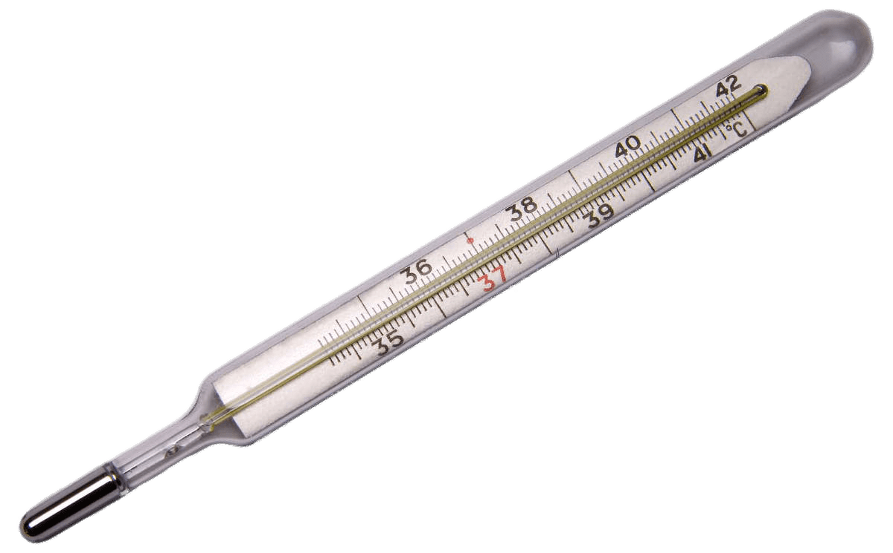

UNIT CONVERSIONS

The process of conversion depends on the specific situation and the intended purpose. This may be governed by regulation, contract, technical specifications or other published standards. Engineering judgment may include such factors as:
The precision and accuracy of measurement and the associated uncertainty of measurement.
The statistical confidence interval or tolerance interval of the initial measurement.
The number of significant figures of the measurement.
The intended use of the measurement including the engineering tolerances.
Historical definitions of the units and their derivatives used in old measurements; e.g., international foot vs. US survey foot.
 Some conversions from one system of units to another need to be exact, without increasing or decreasing the precision of the first measurement. This is sometimes called soft conversion. It does not involve changing the physical configuration of the item being measured.
Some conversions from one system of units to another need to be exact, without increasing or decreasing the precision of the first measurement. This is sometimes called soft conversion. It does not involve changing the physical configuration of the item being measured.
By contrast, a hard conversion or an adaptive conversion may not be exactly equivalent. It changes the measurement to convenient and workable numbers and units in the new system. It sometimes involves a slightly different configuration, or size substitution, of the item.[clarification needed] Nominal values are sometimes allowed and used.